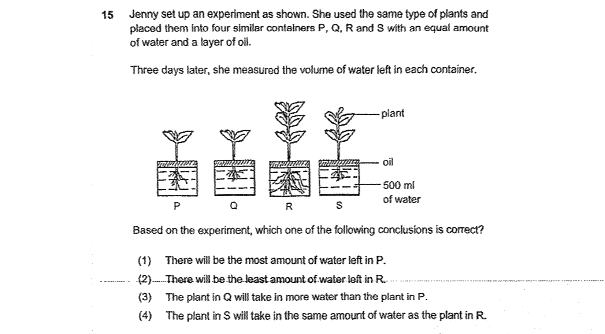
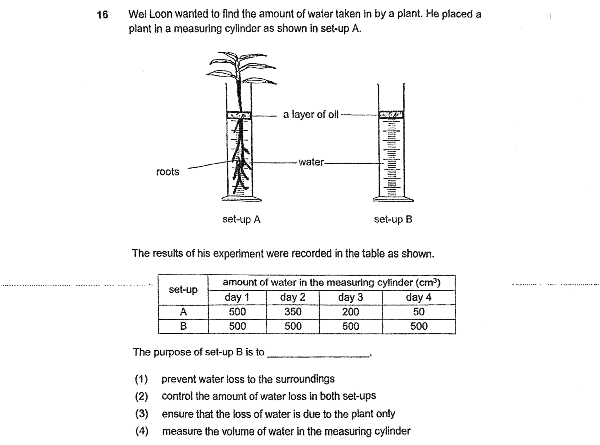
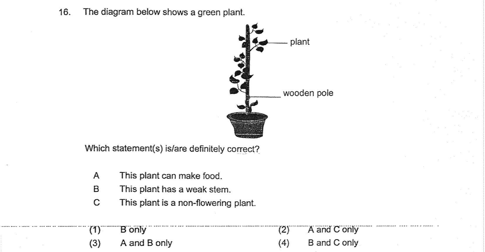
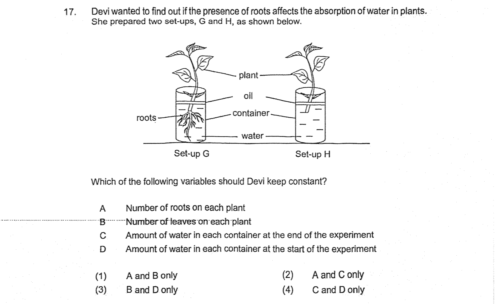
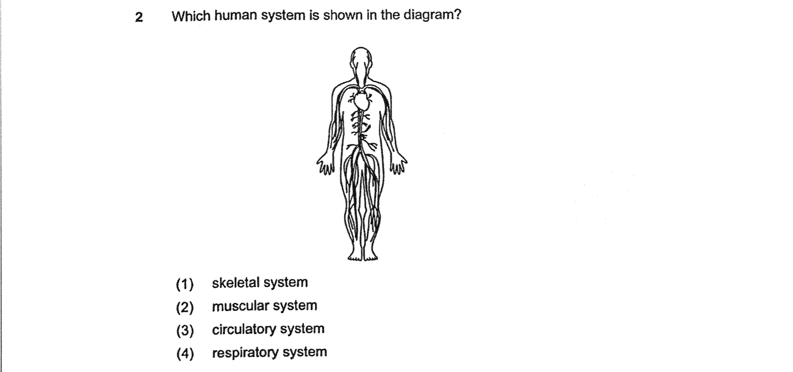
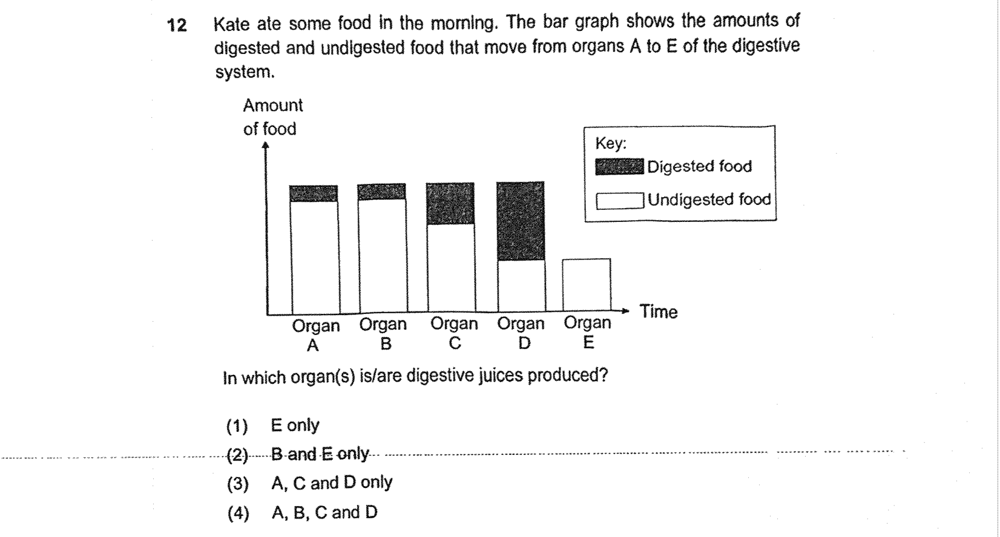
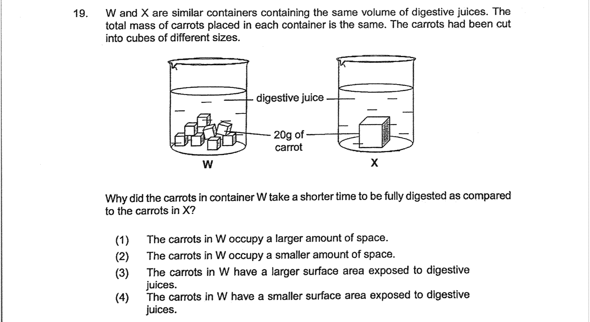
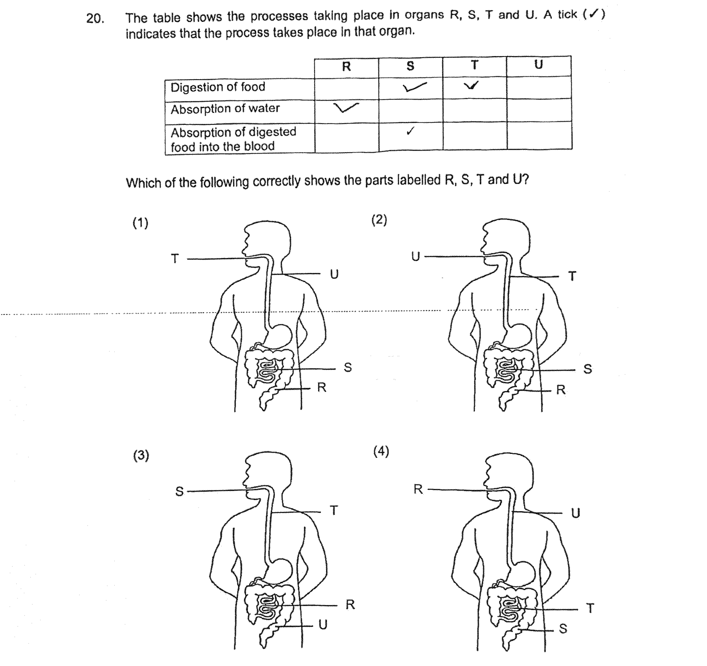

P4 Science Quiz
Generated 2026-07-04 · 2 topic(s) × up to 15 question(s) each · ranked easiest → hardest within each topic.
Topic: Plant Systems
1.
Source: ACS · Q15 · difficulty 8

2.
Source: ACS · Q16 · difficulty 8

3.
Source: St Hilda · Q11 · difficulty 8

4.
Source: Nan Chiau · Q14 · difficulty 8

5.
Source: Nan Chiau · Q16 · difficulty 8

6.
Source: Nan Chiau · Q17 · difficulty 8

7.
Source: Nan Hua · Q11 · difficulty 8

8.
Source: Nan Hua · Q12 · difficulty 8

9.
Source: Nan Hua · Q16 · difficulty 8

10.
Source: Nanyang · Q16 · difficulty 8

11.
Source: Nanyang · Q17 · difficulty 8

12.
Source: Maha Bodhi · Q23 · difficulty 8

13.
Source: Paya Lebar MGS · Q16 · difficulty 8

14.
Source: Maha Bodhi · Q21 · difficulty 9

15.
Source: St Nicholas · Q3 · difficulty 9

Topic: Human Systems
1.
Source: ACS · Q2 · difficulty 4

2.
Source: Catholic High · Q7 · difficulty 4

3.
Source: St Hilda · Q4 · difficulty 5

4.
Source: Red Swastika · Q17 · difficulty 5

5.
Source: St Hilda · Q5 · difficulty 6

6.
Source: Tao Nan · Q3 · difficulty 6

7.
Source: Tao Nan · Q12 · difficulty 6

8.
Source: Tao Nan · Q13 · difficulty 6

9.
Source: ACS · Q12 · difficulty 7

10.
Source: St Hilda · Q6 · difficulty 7

11.
Source: Nan Hua · Q14 · difficulty 7

12.
Source: Nanyang · Q19 · difficulty 7

13.
Source: Nan Chiau · Q13 · difficulty 8

14.
Source: Nanyang · Q20 · difficulty 8

15.
Source: Maha Bodhi · Q24 · difficulty 8